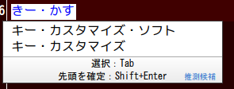

DvorakJ:レファレンスマニュアル:FAQ
- （半）濁点記号を単独で出力する際の注意点
- 順に打鍵する動作
- 同時に打鍵する動作
- キーの変更
- ATOK 2011
目次
（半）濁点記号を単独で出力する際の注意点
「か」＋「゛」で「か゛」ではなく「が」を出力する
順に打鍵する動作
文字の入力中に Back Space や Esc を押しても入力中のキーストロークが廃棄されない
同時に打鍵する動作
キーが取りこぼされてしまう
文字の表示を何ミリ秒待機キーを待機すべきか
キーの変更
管理者権限で起動したソフトウェアにおいてキーの入れ替えができない
Caps Lock を Ctrl のように動作させたい
問題の所在と対策の方針
対策その1 他のソフトウェアを使用する
対策その2 DvorakJ の機能を活用する
同時に打鍵する配列
順に打鍵する配列
順にも同時にも打鍵する配列
ATOK 2011
日本語入力がおかしくなる
直接入力に切り替えると、文字が意図せずに確定されてしまう
（半）濁点記号を単独で出力する際の注意点
「か」＋「゛」で「か゛」ではなく「が」を出力する
月配列のように濁点や半濁点を単独で出力する配列を使用するときには、ローマ字入力用ではなくてかな入力用の設定を利用しなければなりません。 たとえばローマ字用の設定で 「か」と「゛」を出力すると「が」ではなく「か゛」が表示されてしまいます。 他方、かな入力用の設定では「が」が適切に表示されます。
かな入力用の設定で DvorakJ を利用するには以下のとおり設定してください。
- 使用中の IME の入力モードをローマ字入力からかな入力に変更する
- DvorakJ の「日本語入力」の設定項目中の「かな入力用の設定で日本語入力用配列を使用する」を有効にする
順に打鍵する動作
文字の入力中に Back Space や Esc を押しても入力中のキーストロークが廃棄されない
単一キーの Back Space や Esc の設定項目で、 Back Space や Esc のキーを発行するよう明示的に指定して下さい。 そうすることで、Back Space や Esc のキーを発行しようとする際、必要に応じて DvorakJ が管理しているキーストロークを廃棄するようになります。
同時に打鍵する動作
キーが取りこぼされてしまう
パソコンの負荷如何に関わらずキーが取りこぼされてしまうならば、素早く打鍵していないのかもしれません。 「文字の表示を何ミリ秒待機キーを待機するか」の間隔を広げてみて下さい。
キーボード自体の性能に問題があることも考えられます。 以下のサイトを参考にしてください。
一般論として、パソコンに負荷がかかっている場合、キー入力がおかしくなる可能性があります。
文字の表示を何ミリ秒待機キーを待機すべきか
同時に打鍵する動作に慣れているなら好みの間隔に設定してください。 間隔を長くすれば、同時に打鍵したと判定されやすくなりますが、文字が表示されるまでに時間がかかります。 なお、私は 20 ミリ秒台後半にこの間隔を設定しています。 これぐらいの間隔に設定すると文字の表示が遅れていないように見えるでしょう。
同時に打鍵する動作に慣れていないならば、間隔を少しずつ短くすればよいでしょう。 たとえば、はじめは 100 ミリ秒ぐらいに余裕を持たせて慣れるようにし、それから間隔を徐々に狭めていくことが考えられます。 40ミリ秒台にまで間隔を狭めるときには、同時に打鍵する動作に慣れていると思います。
キーの変更
管理者権限で起動したソフトウェアにおいてキーの入れ替えができない
DvorakJ を管理者権限で実行してください。
Caps Lock を Ctrl のように動作させたい
Caps Lock を Ctrl として使用する設定方法を説明します。 まず、DvorakJ では Caps Lock を Ctrl に完全には変更できない事情を解説し、それから入力方式毎の設定例を提示します。
問題の所在と対策の方針
DvorakJ の開発環境たる AutoHotkey_L では、Caps Lock を Ctrl に置き換えることができません（本家 AutoHotkey においても同様です）。 日本語環境において、Caps Lock を押し上げる動作を OS が正常に認識しないので、Caps Lock については、押し下げる動作しか把握できないのです （この問題は、２ちゃんねるの専用スレッドでも、よくある質問として掲載されている。software / AutoHotkey スレッド part10の Q1 を参照。）。
一つの対処策は、DvorakJ 以外のソフトウェアを使用してキーを置き換えることです。 パソコンのキーを自由に変更できる環境にあるならばまずこれを試してみてください。
他の対処策としては、キーを押し下げる動作のみを判定することで、Caps LockをあたかもCtrlのように処理すればよいでしょう。 具体的には、以下で説明するように、文字キーを同時に打鍵するのと同様、Caps Lockと文字を同時に打鍵するよう設定します。
対策その1 他のソフトウェアを使用する
ここでは Ctrl2cap (technet.microsoft.com) というソフトウェアを紹介します。 これは Caps Lock を 左 Ctrl へと置き換えるプログラムで、コマンドを用いてインストールとアンインストールを行います。 具体的には、このソフトウェアを動作させるには管理者権限でコマンドプロンプトを起動し、つぎのように入力します。入力後にパソコンを再起動してください。
- インストール
Ctrl2cap.exe /install
- アンインストール
Ctrl2cap.exe /uninstall
詳しい説明は Ctrl2Capツールで［Ctrl］と［CapsLock］キーを入れ替える － ＠IT にあります。 当方の環境 (Windows 7 service pack 1 64 bit) では正常に動作しました。
対策その2 DvorakJ の機能を活用する
同時に打鍵する配列
同時に打鍵する配列において以下の設定を追加します。
-capslock[
^{sc002}|^{sc003}|^{sc004}|^{sc005}|^{sc006}|^{sc007}|^{sc008}|^{sc009}|^{sc00A}|^{sc00B}|^{sc00C}|^{sc00D}|^{sc07D}|
^{sc010}|^{sc011}|^{sc012}|^{sc013}|^{sc014}|^{sc015}|^{sc016}|^{sc017}|^{sc018}|^{sc019}|^{sc01A}|^{sc01B}|
^{sc01E}|^{sc01F}|^{sc020}|^{sc021}|^{sc022}|^{sc023}|^{sc024}|^{sc025}|^{sc026}|^{sc027}|^{sc028}|^{sc02B}|
^{sc02C}|^{sc02D}|^{sc02E}|^{sc02F}|^{sc030}|^{sc031}|^{sc032}|^{sc033}|^{sc034}|^{sc035}|^{sc073}|
]
順に打鍵する配列
順に打鍵する配列では、Caps LockをあたかもCtrlのように処理することができません。 「順に打鍵する配列」を以下の「順にも同時にも打鍵する配列」として設定しなおす必要があります。
順にも同時にも打鍵する配列
順にも同時にも打鍵する配列においては以下の設定を追加します。 同時に打鍵する配列とは異なり、-capslockの直前に開き丸括弧を記述する必要があります。
(-capslock[
^{sc002}|^{sc003}|^{sc004}|^{sc005}|^{sc006}|^{sc007}|^{sc008}|^{sc009}|^{sc00A}|^{sc00B}|^{sc00C}|^{sc00D}|^{sc07D}|
^{sc010}|^{sc011}|^{sc012}|^{sc013}|^{sc014}|^{sc015}|^{sc016}|^{sc017}|^{sc018}|^{sc019}|^{sc01A}|^{sc01B}|
^{sc01E}|^{sc01F}|^{sc020}|^{sc021}|^{sc022}|^{sc023}|^{sc024}|^{sc025}|^{sc026}|^{sc027}|^{sc028}|^{sc02B}|
^{sc02C}|^{sc02D}|^{sc02E}|^{sc02F}|^{sc030}|^{sc031}|^{sc032}|^{sc033}|^{sc034}|^{sc035}|^{sc073}|
]
ATOK 2011
日本語入力がおかしくなる
ATOK 2011 には「推測候補の自動表示」という機能が組み込まれました。 【レビュー】操作性と入力支援を強化した「ATOK 2011 for Windows」 (1) 生産性を高めるために向上した操作性 | パソコン | マイコミジャーナルで説明されているように、文字をいくつか入力するだけで変換候補が自動的に表示されるものです。
この機能が有効ならば DvorakJ を用いた日本語入力がおかしくなるかもしれません。 実例を示しましょう。 一度「キー・カスタマイズ・ソフト」と入力し、続けて「キー・カス」まで入力すると、以下のように、推測された変換候補が自動的に表示されます。

候補がこのように自動的に表示されると、変換候補窓が表示されたとDvorakJ は認識します。 そう認識した結果 DvorakJ はどう動作するかというと、設定によっては、直接入力用配列に切り替えるのです。 上記の例では、「キー・カス」まで入力した途端、直接入力用配列に切り替わってしまいます。 直接入力用配列と日本語入力用配列が異なっていると、日本語入力をスムーズに行うことができなくなるでしょう。
変換候補窓が表示されても DvorakJ が日本語入力用配列を使用し続けるには、DvorakJ の設定をつぎのように変更します。
- 「IME 関連」の「変換候補窓が出現したら、直接入力用配列を一時的に使用する」を無効にする
もっとも、「ATOK プロパティ」から「変換候補の自動表示」を無効にすれば、DvorakJ の上記の設定を変更する必要はありません。
直接入力に切り替えると、文字が意図せずに確定されてしまう
「日本語入力をｵﾌにしたとき入力中の文字列を確定する」機能と DvorakJ の動作について説明しなくてはなりません。
ATOK 2011の「日本語入力をｵﾌにしたとき入力中の文字列を確定する」機能を無効にしているとき、DvorakJ の「単一キー」中の設定「直接入力にする」を使用すると、入力中の文字が意図せずに確定されてしまいます。 この機能は以下のところで設定します。
- 「ATOK プロパティ」内の「入力・変換」タブを選択する
- 設定項目上のツリーから「入力補助」を開き、その下に「特殊」を選ぶ
- 「設定一覧」の下から8つめの項目に、「日本語入力をｵﾌにしたとき入力中の文字列を確定する」があります
なぜこのように動作してしまうかというと、DvorakJ の「直接入力にする」という挙動が、ATOK 2011の予期しないものだからです。 DvorakJ が「直接入力にする」というとき、IME の有効・無効の状態を変更せよ、との命令をIMEに送信しています。 この命令を受け取った ATOK 2011は、日本語入力を無効にするものの、「日本語入力をｵﾌにした」とは認識しません。 こういうわけで意図しない挙動が生じてしまうのです。
対処法は、DvorakJ の「単一キー」の設定で、「直接入力にする」のかわりに「全角」を選択することです。 こうすることで、ATOK 2011は「日本語入力をｵﾌにした」と判定でき、結果として、「日本語入力をｵﾌにしたとき入力中の文字列を確定する」機能をただしく無効にできます。